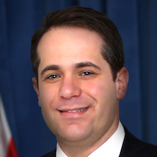

<div id="speakers">
<div class="cell">
<p><strong>Ari Hoffnung</strong> is a national leader in promoting financial transparency and civic engagement and currently serves as a Senior Advisor at Socrata.</p>

<p>As New York City Deputy Comptroller for Budget Public Affairs, Ari was the driving force behind Checkbook NYC, a website that empowers the public to keep an eye on more than $70 billion in annual government spending with detailed, up-to-date information about New York City’s revenues, expenditures, contracts, payroll, and budget, and was called the best of its kind by the U.S. Public Interest Research Group. Ari also spearheaded The People’s Budget NYC, a crowd-sourcing website that offers taxpayers a platform to vote, discuss, and suggest new budget ideas.</p>

<p>Prior to his service with the City of New York, Ari was a Managing Director at Bear Stearns where he worked for more than a decade. Hoffnung holds an MBA in Finance from New York University’s Stern School of Business and a bachelor’s degree from Queens College. He resides in the Riverdale section of the Bronx with his wife, Annie, and their three children.</p>
</div>
</div>